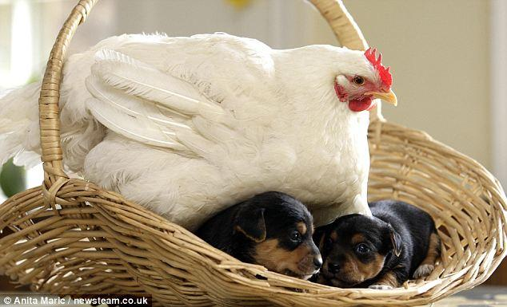

isotopeSearchFilter.js, a jQuery Plugin
Get the code on Github
Search Stuff
(e.g. chicken, dog, flower)

Mommy Chicken
chicken, dogs, basket

Dog Swinger
Dog, swing, park

Horsey Ride
Horse, pug

Cool Chicken
Chicken, jacket

Melon Head
Cat, melon
Drunk Cat
Cat, couch potato, bud light

Cool Hair
Dog, rug
Flower Dog
Dog, Flower